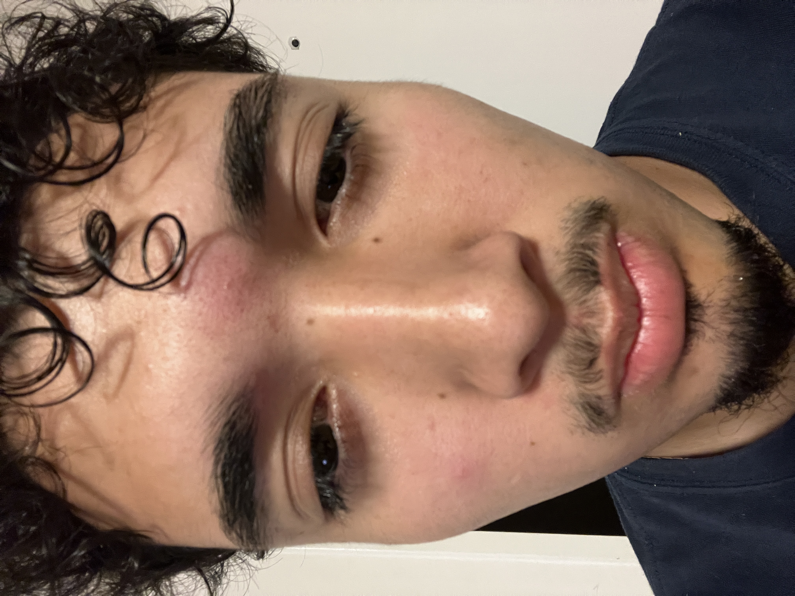
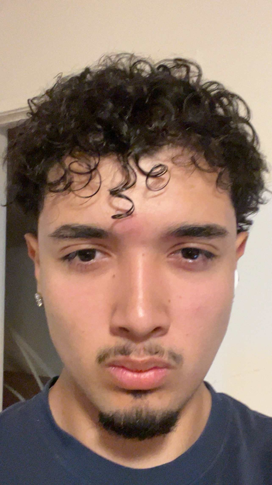
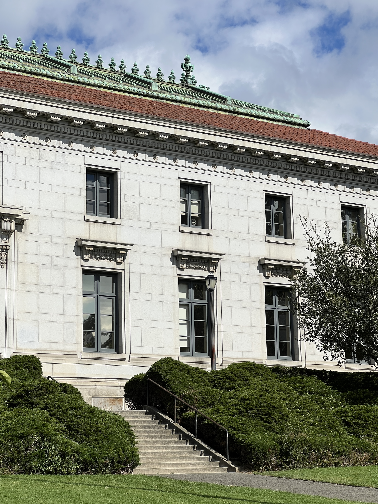
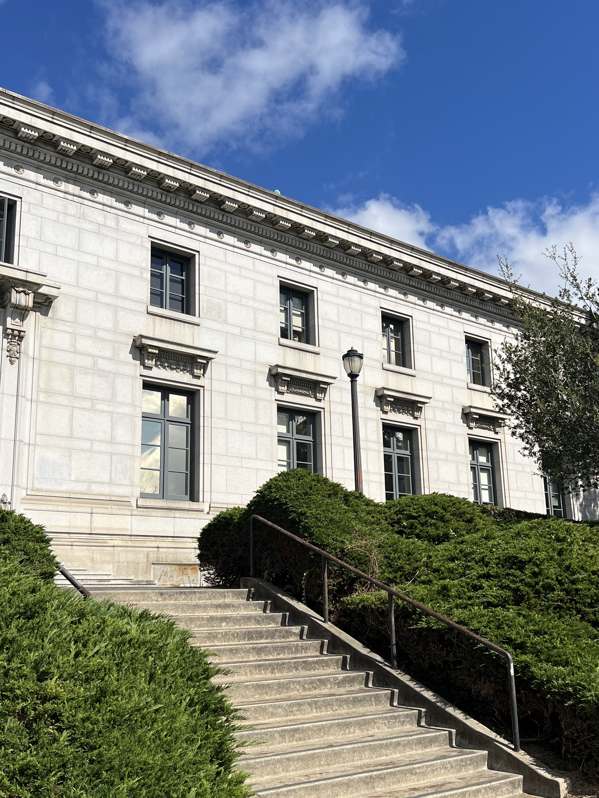
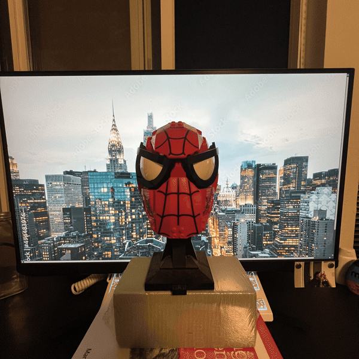

with Your Camera


The left photo was shot up close with a small focal length. My nose is noticeably bigger and my face looks narrower, since the features closest to the lens get exaggerated the closer you get. The right photo was shot from further back and zoomed in instead, which keeps proportions close to how a face actually looks in person.


Shooting from further away and zooming in flattens the building and makes it look almost two-dimensional, with far and near features looking about the same size. Shooting up close and wide does the opposite. It shows real depth, since whatever's closest to the lens gets pulled forward and made more prominent than everything behind it.

I shot this with grid mode on, for about 10 frames total, stepping backward while zooming in each time to keep the subject the same size in the grid.